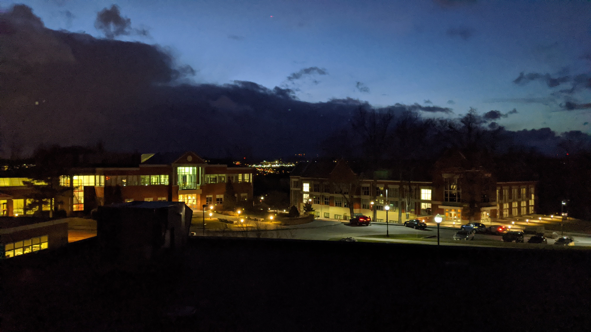
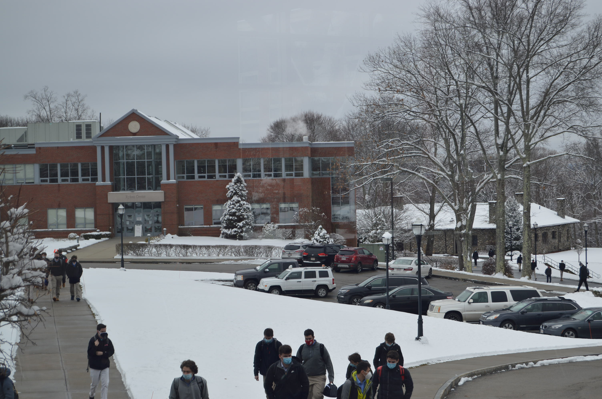
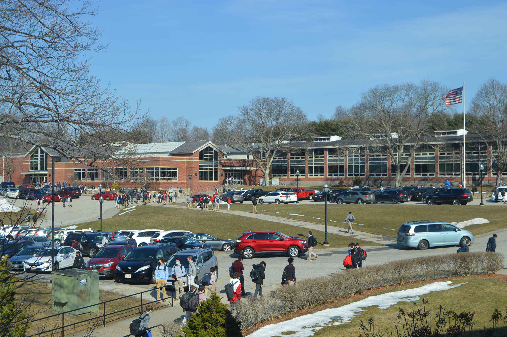

It's the school where I'm going to between August 29, 2018 and May 22, 2022.
Preview Day 2017 (Ben's First Look) - May 31, 2017
Shadow Day - February 15, 2018
Video Game Night - March 16, 2018
Freshman Leadership - July 2018
Freshman Orientation - August 29, 2018
Intro of Myself (from Religion class) - September 6, 2018
Pep Rally 2018 - September 28, 2018
Freshman Retreat - October 22, 2018
The First Miracle - February 7, 2019
The Second Miracle - March 11, 2019
The Third Miracle - Spring 2019
Speech in Religion Class - March 22, 2019
P-Cubed Speech - May 2, 2019
Preview Day 2019 - May 22, 2019
P-Cubed Leadership - September 2019 - April 2020
Curriculum Night 2019 - September 19, 2019
Pep Rally 2019 - September 20, 2019
P-Cubed Speech - September 26, 2019
Open House - September 28, 2019
Open House - October 22, 2019
"My Life as a P-Cubed Leader" - November 12, 2019
P-Cubed Speech - November 21, 2019
P-Cubed Speech - December 12, 2019
Compassion (The Fourth Miracle) - December 20, 2019
Open House - March 4, 2020
Sophomore Retreat - March 5, 2020
Pioneers Online - Spring 2020
Coronavirus Orientation - September 8, 2020
P-Cubed Speech - October 7, 2020
P-Cubed Speech - November 4, 2020
P-Cubed Speech - November 12, 2020
P-Cubed Speech - December 9, 2020
Buche de Noel - December 16, 2020
P-Cubed Speech - December 16, 2020
Biden - January 20, 2021
P-Cubed Speech - February 10, 2021
SALT - Spring 2021
P-Cubed Speech - March 3, 2021
I have some photos taken around campus.

June 3, 2019. This was taken after the first day of final exams my freshman year.
<January 16, 2020. This was taken after the January 2020 P-Cubed, and it looks a lot different between day and night.
<January 27, 2021. We had a delay due to the snow that morning. This was taken from my seat at lunch
<March 11, 2021. This was the first 70 degree day of 2021, and it was beautiful just after the final bell before a three day weekend.